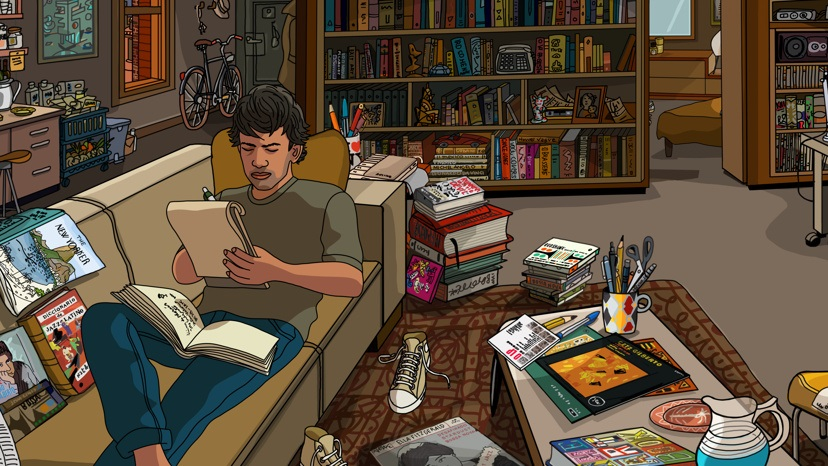

I still fondly remember "Chico and Rita," a one-of-a-kind feature from 2010 that remains a highlight in Spanish animation. For a long time, it seemed like no follow-up would be made (director Fernando Trueba primarily worked in live-action, and co-director Javier Mariscal worked in mediums suitable for galleries). But finally, news broke that they'd reunite for "They Shot The Piano Player," and I eagerly looked forward to it.That was in 2019. I didn't see it until a limited release in 2024. It's rare for me to have such anticipation for so long; Sylvain Chomet comes to mind, with multiple announced and canceled projects that never moved forward after "The Illusionist" in 2010. "They Shot The Piano Player" acts as an animated documentary, wrapped in the fictional journey of an American journalist. While exploring his specialty topic of Brazilian jazz in its home country, he comes across a muscian he's never heard of: Frabcisco Tenorio Junior, or Tenorio for short. "Oh, he's the best of his time!" exclaims his collegue, while explaining he went missing decades ago, presumed dead under mysterious circumstances. The journalist is intrigued to learn more, and his guide introduces him to living friends, family and co-workers that remember him and what might have occurred the night he disappeared. What direction should the story go? Should it focus on the mystery of the man's disappearance, and the multiple possible suspects? Shoud it focus on his living wife, children, or mistress, and how they coped with his loss? Should it focus on him as a human and how he lived his life? Or his unparalleled skill as a pianist? Or his contribution to the historic Brazilian jazz scene and how his work inspired others? Or on the Brazilian jazz scene itself? I don't know the best answer, and unfortunately, the film doesn't seem to know either. This results in a seemingly random series of clips for the first hour of the film that doesn't satisfy any of the possible paths. Early on, characters describe the difficult political period of Argentina in the 1970's, and suggest that it was the likely cause of Tenorio's disappearance ("he should have known it wasn't safe to go out after dark," they say regarding corrupt police patrols). But the film teases other possible scenarios, primarily based on how he was cheating on his wife with a mistress at the time in a nearby hotel. Could the mistress be involved, or perhaps the wife out of anger? At risk of spoiling, the answer is no, these had nothing to do with it, and the film concludes that it was entirely the police and government (and that this was already widely known due to a confession several years prior - perhaps the journalist was just wasting time to seek further possibilities). Leading up to that is a series of random interviews, set up by the journalist's collegue, at various private homes and dinners and clubs. Some offer new trails to follow (in terms of new contacts, some of which are difficult to get a hold of), but most are just reminiscing about the man and his loss. And for the most part, it's ineffective. For most of the movie, I had no idea what type of man Tenorio really was, or what his music was like, or that his music really mattered all that much. I was baffled... maybe as an experiment, the film was edited like jazz itself, improvisational and wild. But this doesn't always work well in music, and in the film, it was failing badly. To the movie's credit, by the last act, I had witnessed just barely enough interviews and re-enactments to understand Tenorio and his music (but only barely - conclusions on that could be summed into a small paragraph). More importantly, when the film does finally commit to his fate being at the hands of night police that took him away and tortured him to death, I was invested enough to care. And it's in those moments that the film feels like it pays proper homage, not just to the musician, but to the thousands of lives killed during that period. Again, not enough is conveyed to explain the region's complex history and how or why this occurred, but the tribute to the victims, and anecdotes to those that survived, was meaningful.  This is a trick documentaries tend to do: lull the viewer into a broader view of the people and the times, before bringing you back to solid ground with more serious and tragic subjects. And "Piano Player" feels as if they interviewed real people, editing and animating them later to make up the movie - it feels like a proper documentary. But it messes with the opportunity to feel like they have a narrative, and this is why I dislike most documentaries. And in the case of this film, there were opportunities for the interviews to feel more meaningful to the subject... even though I did become invested much later, as if by accident, it should have been simple through narration to get me invested and understand the subject much earlier. Notably, the American journalist is voiced by, who else, Jeff Goldblum. I like Jeff, and his love for jazz and scholarly way of speaking makes him a good choice to sell the movie. However, his inclusion felt last-minute, as the few speaking scenes with his mouth moving don't match his normal rhythm, as if the scenes were already animated and his dubbed the shots later. Elsewhere, most of his scenes carefully avoid showing his mouth, allowing his narration to be smoother. That said, I don't think he's a great fit to guide the viewer, at least not as this fictional character, in part because of how aimless the character (and therefore, the movie) seems to be (a documentary of the real Jeff Goldblum researching the pianist might have been more engaging). Most of the recorded actors speak native Portuguese ("not Spanish," as pointed out by one character regarding Brazil's primarily language) with subtitles, with feels authentic to the setting, but because most of these are (presumably) real people and not actors, their delivery and captured recording quality isn't ideal.I wasn't pleased with the animation this time. Watching trailers for "They Shot The Piano Player" and "Chico and Rita" shows a stark dip in quality, reassuring it wasn't just my memory deceiving me. Much like the prior film, the style relies on black bold outlines, as if everything was drawn with coloured marker, but character designs are a bit more loose and abstract here. A handful of background shots are detailed and pleasant. The most distracting part is the animation, with severely limited frame-rates, possibly rotoscoped on live-action footage, a visual disaster for lip-syncing. This varies wildly from scene to scene, with some shots looking like the team had their young children draw and animate background characters to save money. The only good thing I can say about the visual production is that it's vibrantly colourful. I'll pretend the pandemic directly caused this output, perhaps reducing the possible team size or budget. You'd think at least the music would be good. And it is... I think? Tenorio's music doesn't come up nearly as much as it should, so I never got a great sense of his style. Ironically, the musical score is largely limited to the background, and easy to go unnoticed. While watching online clips again, I realized the trailers for "They Shot The Piano Player" was far more effective in conveying the music of Tenorio and his importance, as well as the importance of his disappearance just as his career was getting started. Those were a more meaningful tribute then the actual film was. Had the movie been structured better, especially in the earlier scenes, this might have been salvaged in spite of the limited animation. But instead, this jazzy collaboration just didn't vibe with me, and I'd only recommend it to those with a strong interest in jazz music or South America.
- "Ani" More reviews can be found at : https://2danicritic.github.io/ Previous review: review_The_Wonderland Next review: review_This_Boy_Can_Fight_Aliens